STAGE 01
日比谷ステップ広場 特設ステージ
13:00 — 18:00雨天開催 / 荒天中止
ABOUT
歴史と文化が息づく日比谷エリアを舞台に、5月の週末、街全体がひとつのライブ会場になる。
日比谷ステップ広場の特設ステージを中心に、HIBIYA FOOD HALL、日比谷OKUROJI の3会場で、ビッグバンドからデュオまで総勢30組以上のアーティストが入れ替わり立ち替わり登場。
ランチタイムのBGMに。仕事帰りのサウンドトラックに。夕暮れの街歩きのお供に。
思い思いのスタイルで、自由に音楽を浴びてください。
SCHEDULE
アーティスト名をタップすると、該当アーティストの紹介へジャンプします。
出演者・時間は変更になる場合があります。
DAY 01
STAGE 01
13:00 — 18:00雨天開催 / 荒天中止
STAGE 02
12:00 — 14:00 / 17:00 — 20:00
STAGE 03
16:00 — 21:00
DAY 02
STAGE 01
12:00 — 17:00雨天開催 / 荒天中止
STAGE 02
12:00 — 14:00 / 17:00 — 19:00
STAGE 03
12:00 — 17:00
ARTISTS
ビッグバンド、デュオ、クインテット — 多彩な出演陣。
HIBIYA FOOD HALL / 日比谷OKUROJI
数々のコンテスト受賞歴を持ち、自身の活動だけでなく著名アーティストのサポートでも活躍する実力派ギタリスト瀬川千鶴と、2026年1月にBLUES ALLEY JAPANで行われた自身のワンマンライブを成功に収め、作曲にも定評のあるサックスプレイヤー榎本有希のデュオプロジェクトです。
5.16 SAT 12:00– / 5.16 SAT 17:00–
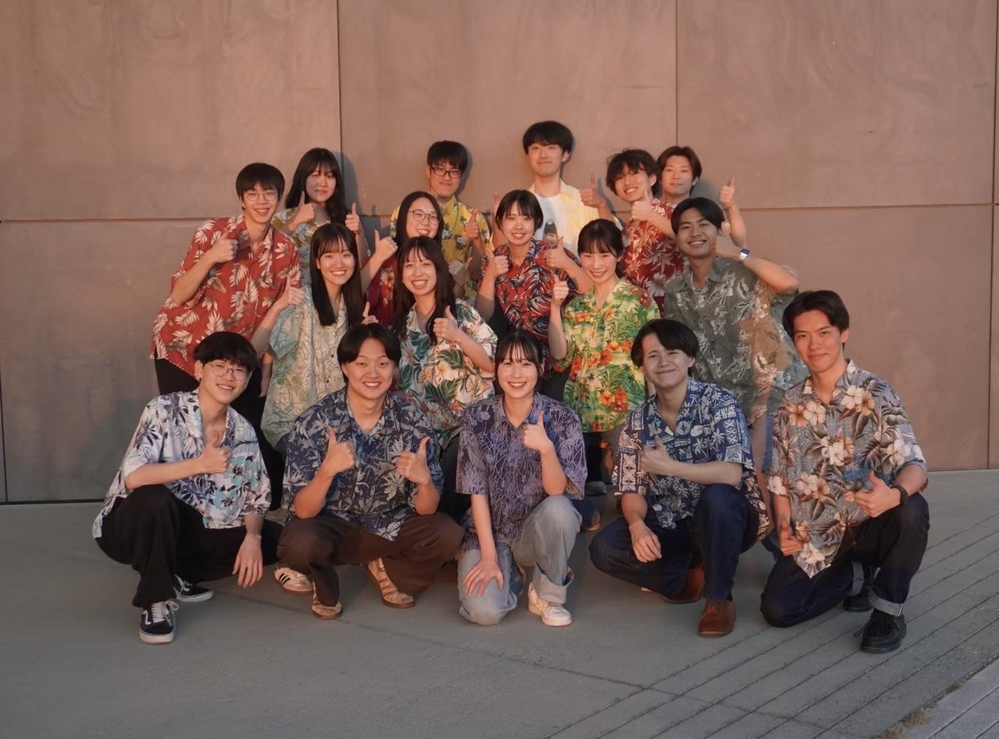
日比谷ステップ広場
1961年に設立の明治大学公認ビッグバンドジャズサークル。数々のコンテストで実績を残し、国内外のミュージシャンとの共演も果たしている。カウント・ベイシーやグレン・ミラーなどのスウィング・ナンバーを軸に演奏活動を展開し、プロミュージシャンも多く輩出している。
5.16 SAT 13:00–
HIBIYA FOOD HALL / 日比谷OKUROJI
ソウルフルな歌声と確かなリズム感を持つ中島有美と、クラシックを基盤にした繊細かつ情熱的なピアノを奏でる眞間麻美によるデュオ。ジャンルを越えたアレンジと即興性あふれる演奏で、心揺さぶるライブを届ける。繊細さと華やかさをあわせ持つステージで、幅広い楽曲を二人ならではの表情豊かな世界観で描き出す。
5.16 SAT 13:00– / 5.16 SAT 16:00–
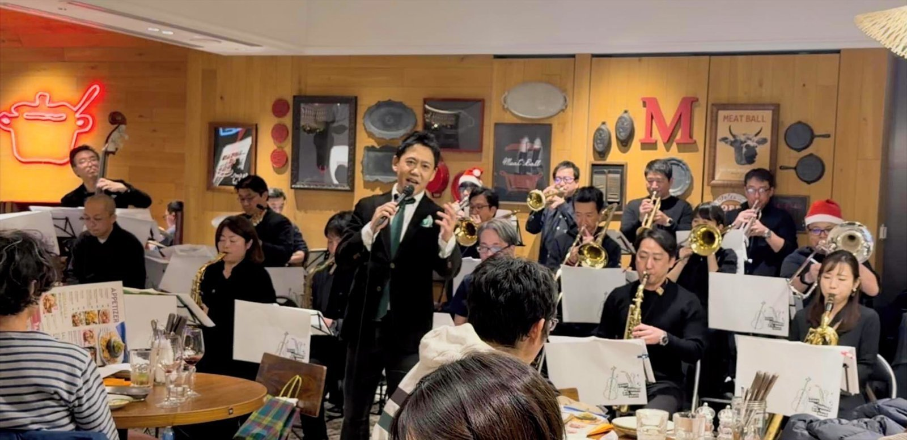
日比谷ステップ広場
2018年結成。ビッグバンドファンの裾野を広げるべく、ライブハウスや各種イベント、レストランなどで数多くのステージに出演。看板ボーカリストとともに、古き良き時代のシナトラサウンドからモダンなアプローチまで、100曲を超えるレパートリーでビッグバンドの魅力をわかりやすく発信していきます。
5.16 SAT 14:00–
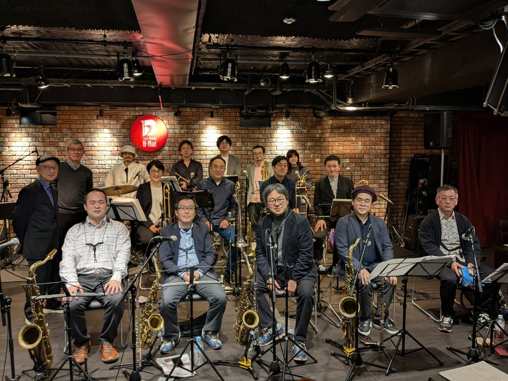
日比谷ステップ広場
Next-Triad Big Bandは東京で活動する2015年結成のビッグバンド。20代から60代までの幅広い世代が集い、全曲メンバーによるオリジナルと独自アレンジで構成。1970〜80年代のサウンドカラーを軸に、個性あふれるソリストによるアドリブとインタープレイが魅力。日比谷ライブフェスティバルには今回で2度目の出演です。
5.16 SAT 15:00–
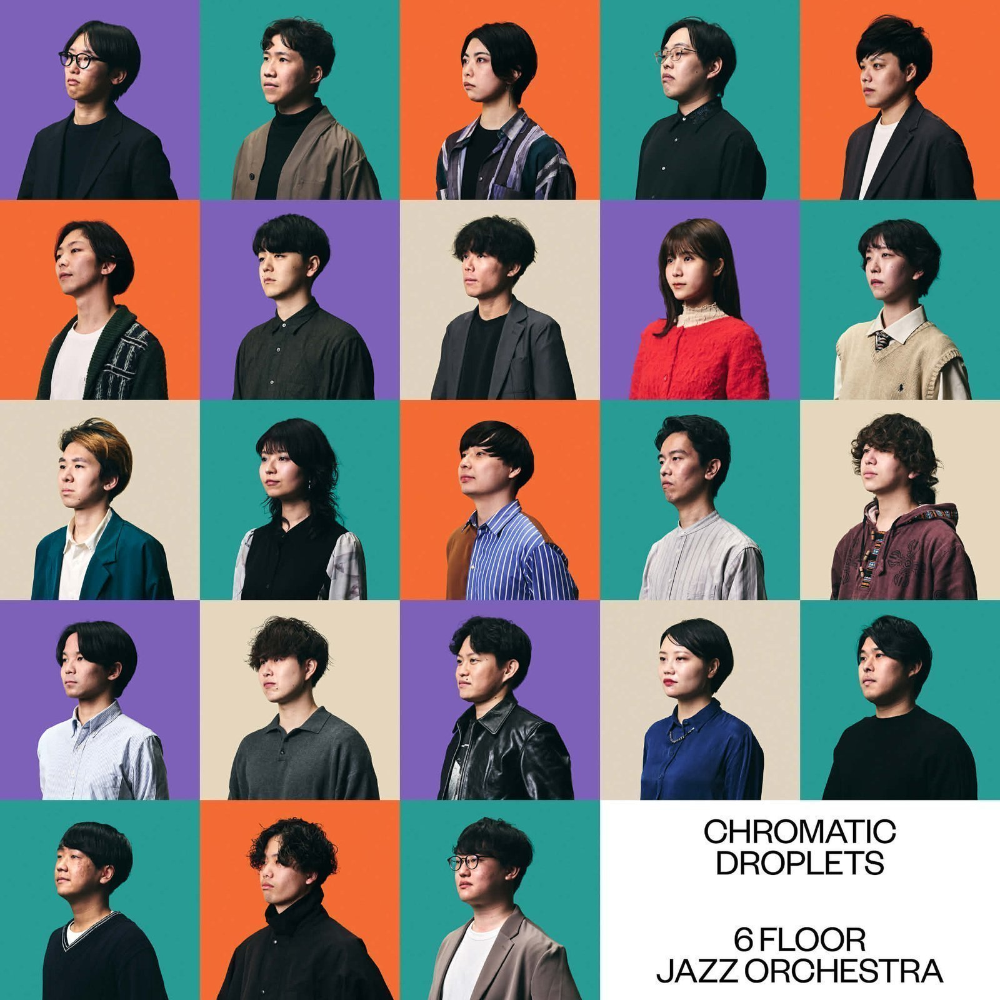
日比谷ステップ広場
2017年結成、東京を拠点に活動するジャズオーケストラ。主にコンテンポラリーとメンバーオリジナルを演奏。2025年、浅草ジャズコンテストにてグランプリを受賞。1st Album「Chromatic Droplets」CD販売&サブスク配信中。6/27 赤坂B♭にてOne-Man Recitalを昼夜2公演開催予定。
5.16 SAT 16:00–
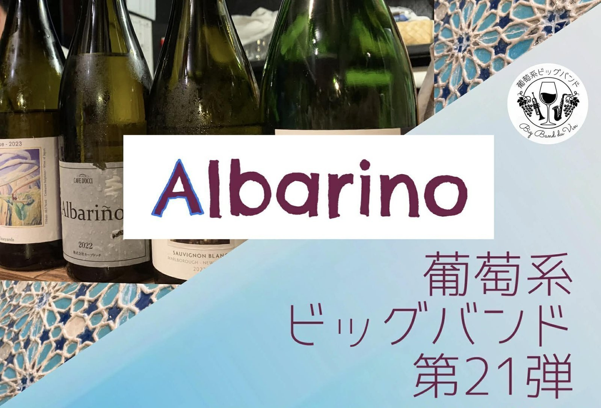
日比谷ステップ広場
ワイン好きのリーダーが葡萄品種をバンド名にして作る21個目のバンド。Albariño（アルバリーニョ）はスペイン生まれの白ブドウ。柑橘や青リンゴみたいに爽やかで、海に合うすっきり系白ワイン代表。すっきり爽やかな演奏をお届けします！ 2027年1月30日に、日比谷ミッドタウンフードホールで演奏予定。
5.16 SAT 17:00–
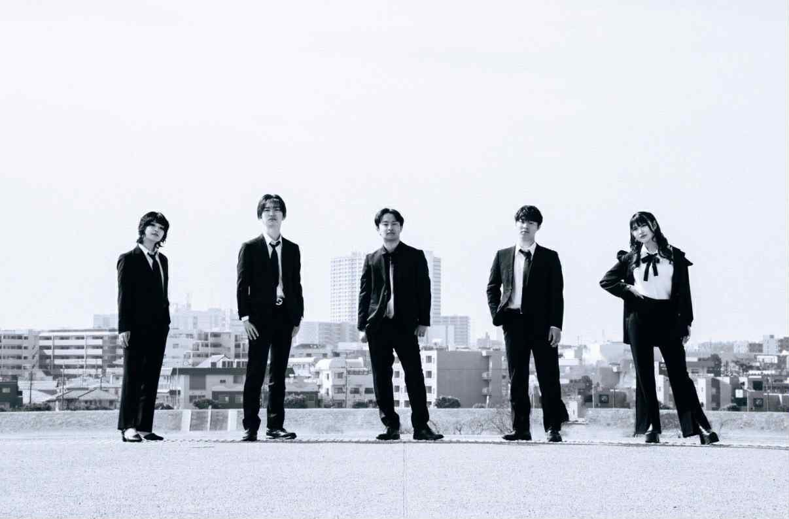
HIBIYA FOOD HALL
Seiko Summer Jazz Campでヤマハ賞を受賞した龍野日菜子(Tp)、浅草ジャズコンテストでベストプレーヤー賞を受賞した松下美月(Ts)をフロントに松坂光輝(P)、大参泰平(Bs)、後藤龍太郎(Ds)が強固なグルーヴを構築。スウィングから現代的アプローチまで自在に行き来し、都内を中心に活動中。
5.16 SAT 18:00–
日比谷OKUROJI
ビッグバンド Happy Flight Orchestraから軽やかに飛び出したVocal (梶多美江/Tamie)、Piano (山口記世/Kiyo) によるDuo。初夏にふさわしい爽やかなナンバーを中心にお届けします♪（スペシャルゲスト参加も？）
5.16 SAT 18:00–
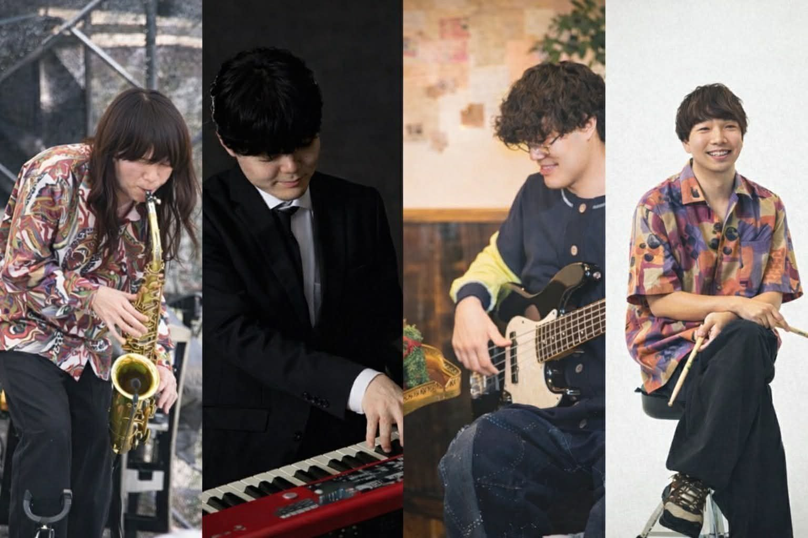
HIBIYA FOOD HALL
古川翼(Sax)、Yuckey(Key)、ヤマノクチミキト(Bs)、長尾琢登(Ds)で構成されたユニット。多彩なジャンルをルーツに持ち、様々なシーンで活躍するメンバーの個性が集約された演奏を是非お楽しみください。
5.16 SAT 19:00–

日比谷OKUROJI
都会の夜に溶け込む、洗練されたサウンド。繊細さと爆発力を併せ持つプレイで、スタンダードからオリジナルまで自在に行き来する。一音ごとに交わされる会話のようなインタープレイが、唯一無二の時間を生み出します。
5.16 SAT 19:00–
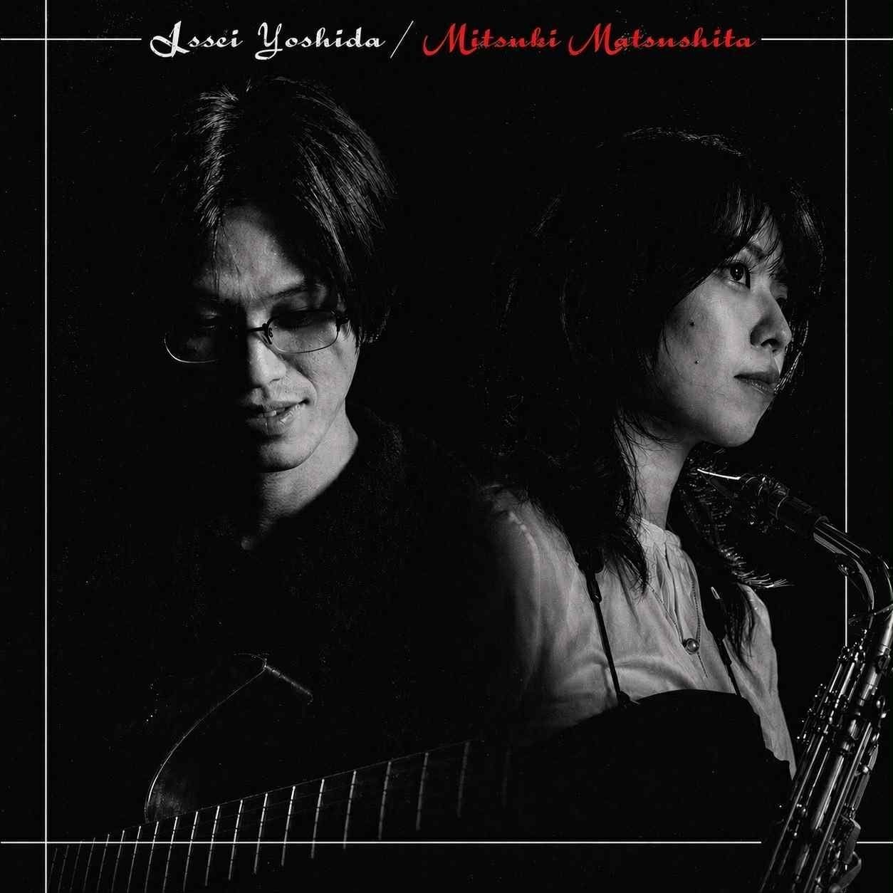
日比谷OKUROJI
都内各所で活動中の松下美月(Sax)と吉田一成(Gt)によるデュオ。ソプラノ、テナーサックスの深く渋い音色とギターの豊かなサウンド、ハーモニーとともにOKUROJIでの素敵な夜をお過ごしください。
5.16 SAT 20:00–
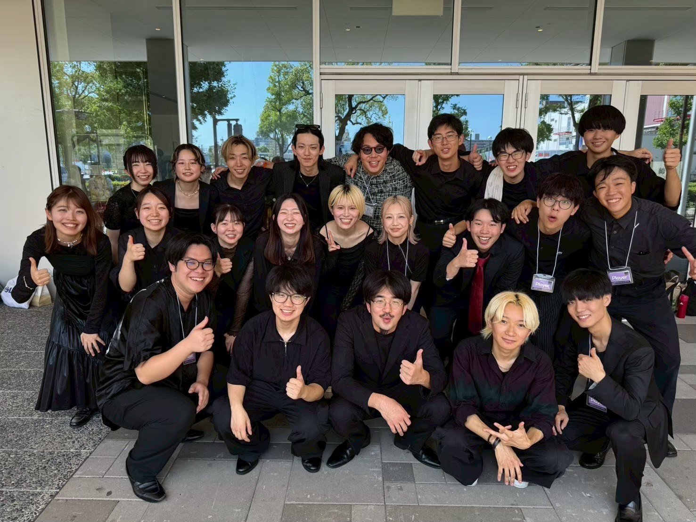
日比谷ステップ広場
青学唯一のビッグバンドサークルです。ファンクやフュージョンを中心に様々なジャンルの音楽を演奏しています。月に1.2回程度対バンやイベントでの演奏の機会があり、大会への出場や関東以外の地域へ遠征して演奏を行っています。2025年度は夏の大会であるYBBJC（ヤマノ・ビッグバンド・ジャズ・コンテスト）にて、優勝をし、創部以来初である2連覇を達成することができました。
5.17 SUN 12:00–
HIBIYA FOOD HALL
第一線で活躍するミュージシャン達による白熱のクインテット。 最高にかっこいいステージをお届けします。 是非お見逃しなく。 メンバー 後藤天太(Sax)武藤勇樹(Key)宮本憲(Gt)森田悠介(Bs)橋本現輝(Ds)
5.17 SUN 12:00–
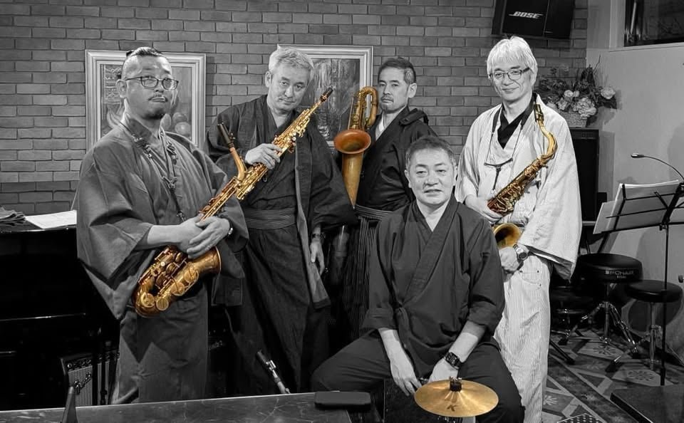
日比谷OKUROJI / HIBIYA FOOD HALL
謎に和装のおっさんがアニソンをJazzる「Spicy & Hot Sax Quartet」と申します。結成1年強、フェスやライブハウス等でのライブを積み重ねてきたSax Quartet + Cajonが、アニソンを素材にジャズ好きがニヤリと笑う変幻自在のアレンジとアドリブで熱い演奏をお聞かせします。
5.17 SUN 12:00– / 5.17 SUN 17:00–
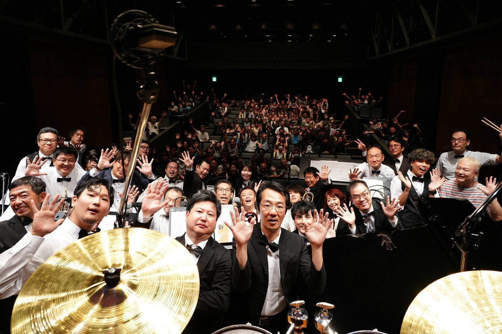
日比谷ステップ広場
2004年にリーダー久光英太の呼びかけで結成されたビッグバンド。2024年9月に行われた結成20周年記念コンサートではアコーディオニストのcoba氏と共演するなど、従来のビッグバンドの枠組みに捉われない活動を展開しています。
5.17 SUN 13:00–
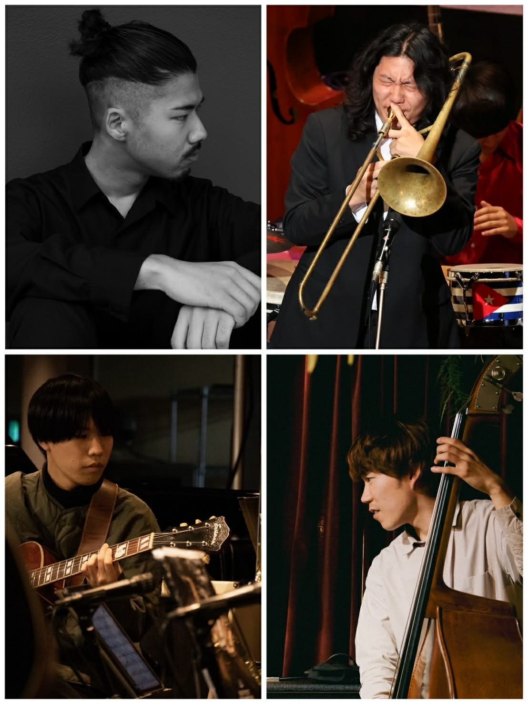
日比谷OKUROJI
横濱良太郎(Tb)、伊東寿(P)、杉内浩介(Gt)、木村優太（Bs）によって結成されたこの日のためのバンドです！Straight aheadなbop tunesを中心に演奏します。大学卒業したてでまだまだ駆け出しの我々ですが、ジャズへの敬意を込めて精一杯演奏しますのでぜひお立ち寄りください。
5.17 SUN 13:00–
HIBIYA FOOD HALL
タップダンサー豊嶋さおり(Tap)、岡勇希(Sax)、那姫-Nagi-(Bs)によるトリオ。タップダンスを軸とし、スウィングや即興を取り入れたジャズサウンドを展開。ライブならではのグルーヴで、音としても踊りとしても楽しめるパフォーマンスを届ける。
5.17 SUN 13:00–
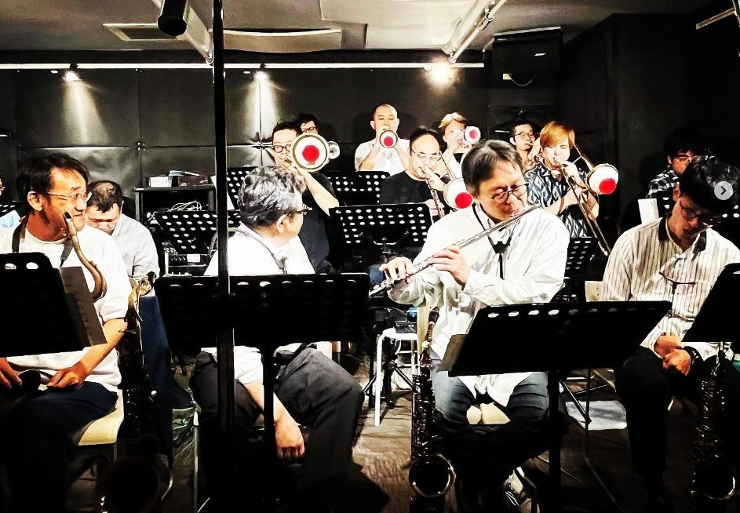
日比谷ステップ広場
ハッピーでゴキゲンな演奏でお客さまに楽しんでもらうことをモットーとするビッグバンド。実力派揃いのメンバーの個性を活かしたソロと、調和のとれた一体感あるアンサンブルが特長で、2013年の結成から140回を超えるライブでパフォーマンスを磨いています。
5.17 SUN 14:00–
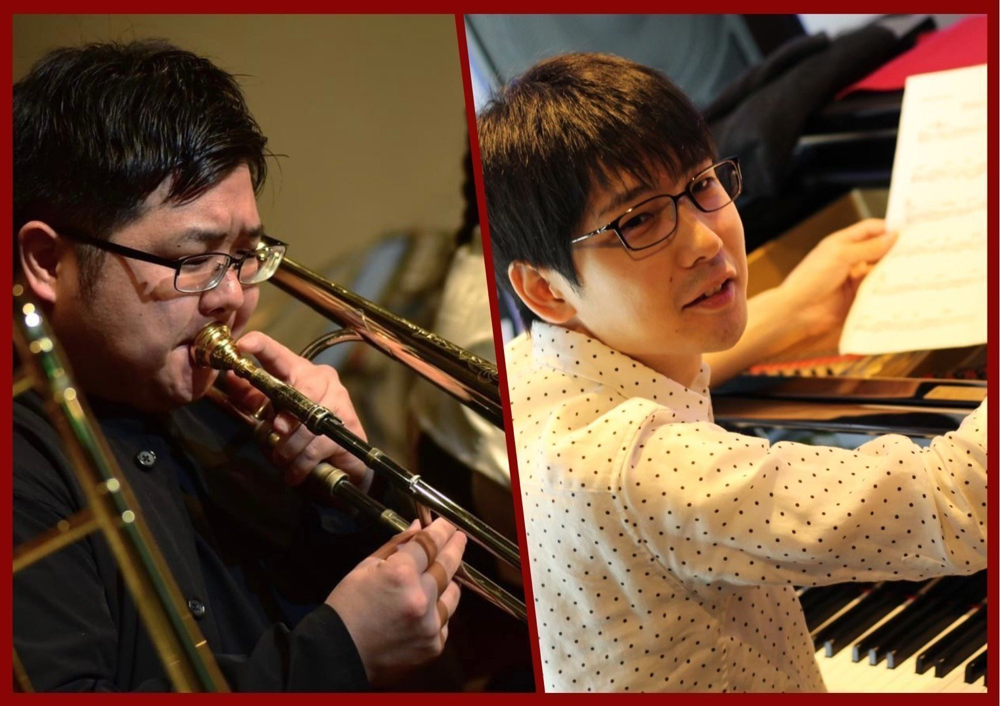
日比谷OKUROJI
温かく力強い音色を持ち味とするトロンボーン奏者・冨永悟が、厚い信頼を寄せるピアニスト前田勇作と演奏します。ジャズの名曲や、6/17発売予定の1st Album『TORAIWA』収録の、風景や情景を描いたオリジナル曲をお届けします。当日はCDの会場先行販売も行います。お気軽にお楽しみください。
5.17 SUN 14:00–
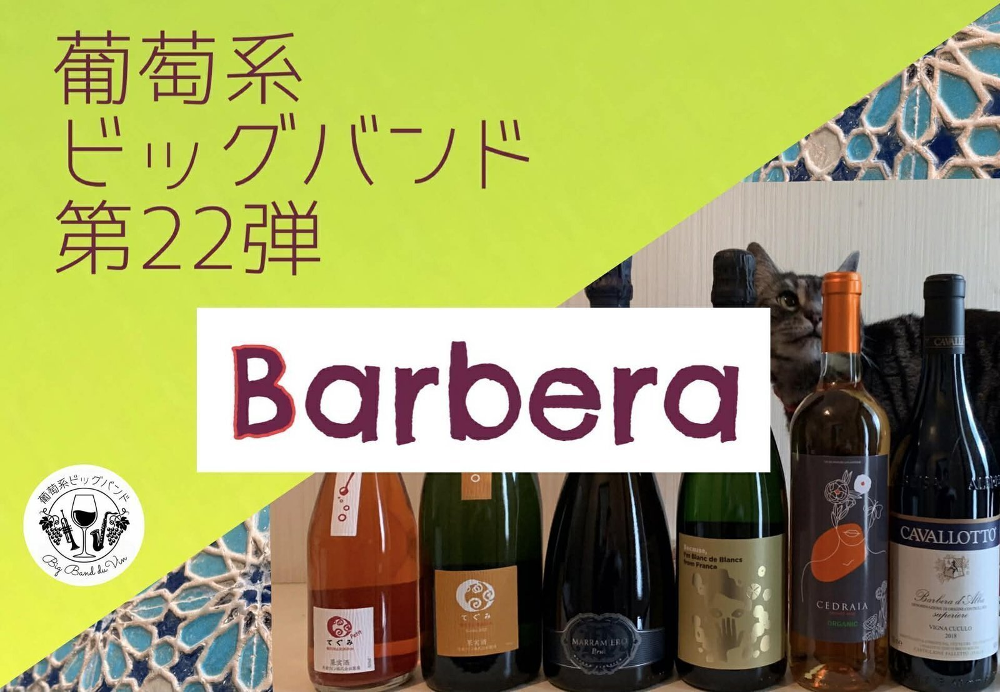
日比谷ステップ広場
ワイン好きのリーダーが葡萄品種をバンド名にして作る22個目のバンド。Barbera（バルベーラ）はイタリア・ピエモンテ州原産。明るい酸味と果実味が魅力で、チェリーのようにフレッシュで、重すぎない軽やか系赤ワイン。演奏もそこを目指します！この夏8/29に、日比谷ミッドタウンフードホールで演奏予定。
5.17 SUN 15:00–
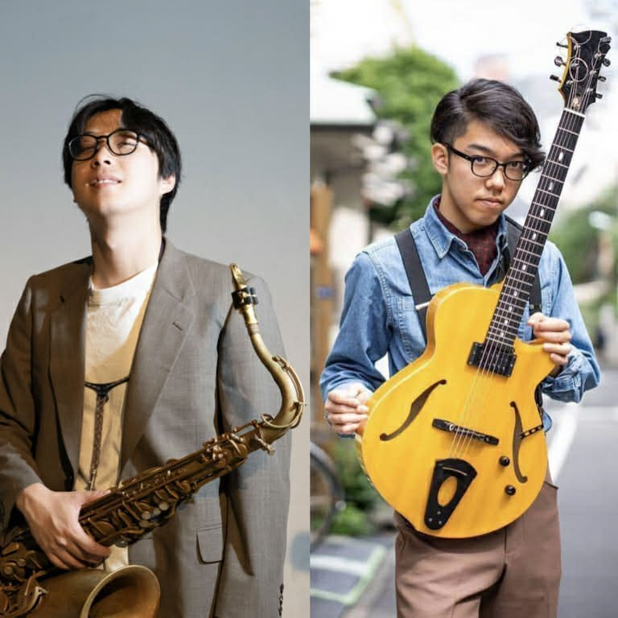
日比谷OKUROJI
初共演のアコースティック・デュオ、ジャンルの枠組みにとらわれない自由な演奏をお届けします。 石脇サンタ：大阪音楽大学ジャズ専攻首席卒業、Sapporo City Jazz 2025 Park Jazz Live Contest 最優秀賞。 田中亮輔：尚美学園大学作曲専攻卒業、第15回 TOKYO JAZZ FESTIVAL 出演。
5.17 SUN 15:00–
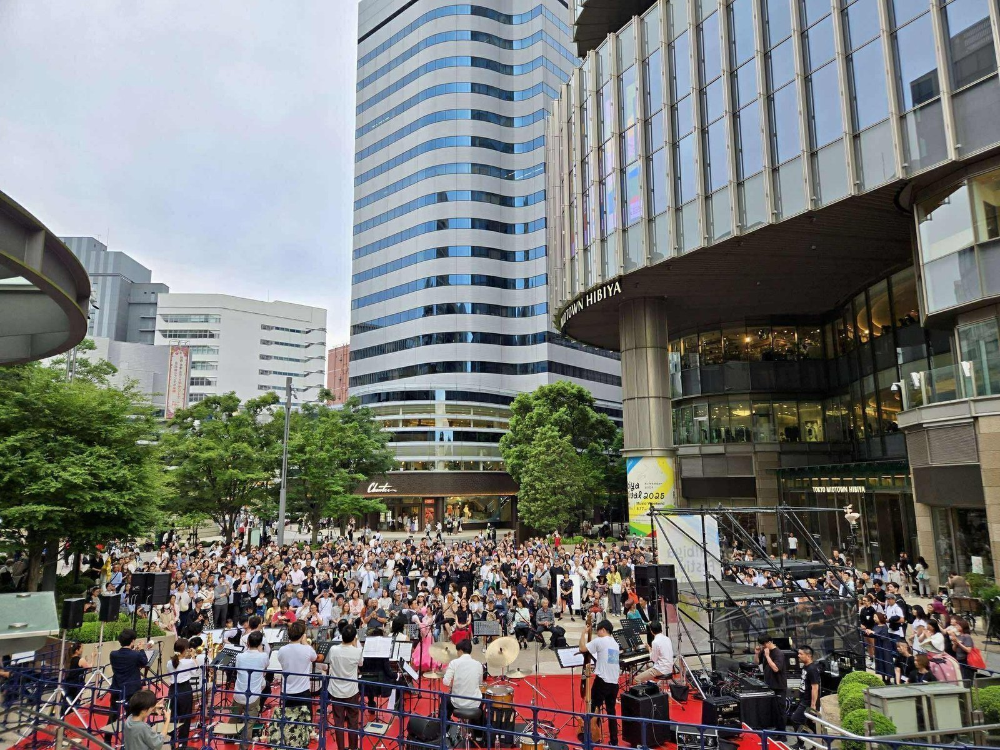
日比谷ステップ広場
優雅なホテルや劇場が集う日比谷を拠点に、鮮やかな音楽を奏でるハイクオリティなビッグバンドです。華やかな空間を創り上げ、お客さまと演者が一体となり、楽しい体験を共有します。今回の「Hibiya Festival 2026」でのステージもぜひお楽しみ下さい。
5.17 SUN 16:00–
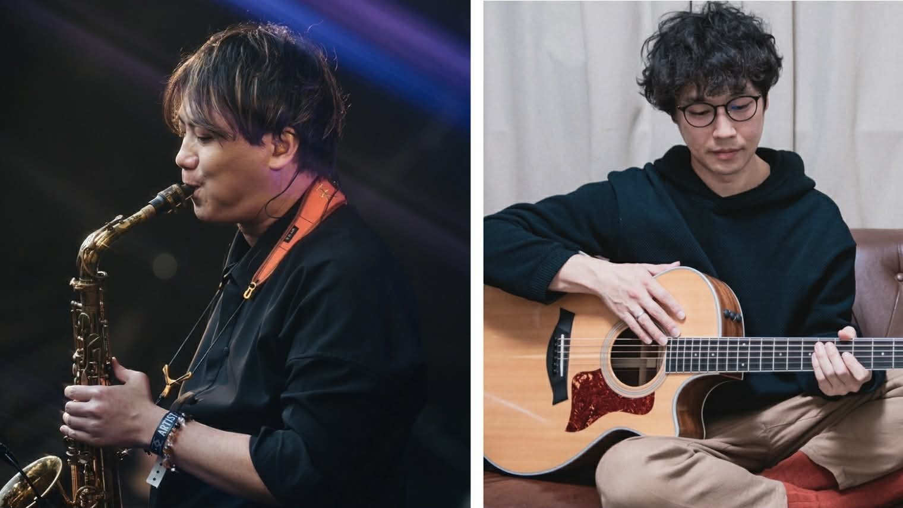
日比谷OKUROJI
幅広いジャンルで活躍する後藤天太、宮本憲によるデュオ。そんな活動の中で何度も一緒に音を出した2人の息のあったセッションをお届けします。大人数バンドサウンドとはまた違ったサックス×ギターの演奏をお楽しみください。
5.17 SUN 16:00–

HIBIYA FOOD HALL
VocalのTamieとPianoのKiyoを中心に、ジャズを愛するメンバーが集まったTamiKiyo & Friends（Sax 藤井淳平、Tp 佐々木克典、Bs 斎藤柊真、Ds 高本佳範）。お食事・お酒がより美味しくなるよう、世代を超えて楽しめるHappyなナンバーをお届けします。
5.17 SUN 18:00–
VENUES
01
メインステージ。オープンエアの広場で、ビッグバンドの迫力あるサウンドを体感。
※雨天開催・荒天中止
02
東京ミッドタウン日比谷B1F。食とドリンクを楽しみながら、至近距離で演奏に浸れるフードホール。
03
新橋—有楽町間のレンガアーチ高架下。アーバンな空気感のなかで、ライブ音楽と街歩きを同時に味わえる。
ACCESS
東京メトロ日比谷駅 A11出口直結 ／ JR有楽町駅 徒歩約5分
東京ミッドタウン日比谷 B1F ／ 東京メトロ日比谷駅直結
JR新橋駅 徒歩約4分 ／ JR有楽町駅 徒歩約4分 ／ 東京メトロ内幸町駅 徒歩約3分